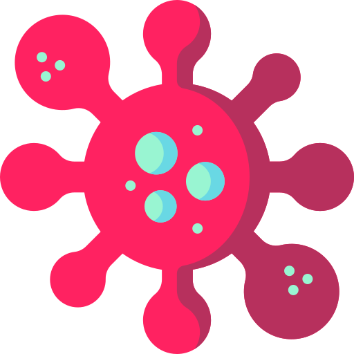

<!DOCTYPE html>
<html lang="en">
<head>
    <meta charset="UTF-8">
    <meta http-equiv="X-UA-Compatible" content="IE=edge">
    <meta name="viewport" content="width=device-width, initial-scale=1.0">
    <title>KS SCHOOL</title>
    <link rel="stylesheet" href="style.css">
    <link rel = "preconnect" href = "https://fonts.gstatic.com">
<link href = "https://fonts.googleapis.com/css2? family = Titillium + Web: wght @ 900 & display = swap "rel =" stylesheet ">

</head>
<body>
    
    <input type="checkbox" id="ativar-dark"  class="ativar-dark">
    <div class="dark-mode">
        <!-- CABEÇALHO -->
        <header>
            
            <div class="container">
                <label for="ativar-dark">
                    <span></span>
                </label>
                <div class="linha">
                        <!--HOME-->
    <div class="HOME DA PAGINA ">
        <figure>
             
        </figure>
        </div>


        <footer>
            <div class="CORONAVIRUS"></div>
            <h3></h3>
        </footer>

        <footer>
            <div class="REGISTRO/CADASTRO"></div>
            <h4></h4>
        </footer>
        <footer>
            <div class="HOME"></div>
               <ul> 
                   <li>
                        <h5></h5>
                   </li>
               </ul>
        </footer>
        <footer>
            <div class="IMAGEM DE LOGIN"></div>
            <h6></h6>
        </footer>
    
        <footer>
            <p></p>
        </footer>
        <header>
                           <!--MODO DARK-->
        <div class="container">
            <label for="ativar-dark"></label>
            <div class="linha">
                              <!--MODO DARK-->


    </header>

    <main>
          <!--RODA PÉ-->
          <footer>
            <div class="O QUE FAZEMOS">
             <h1>OPEN</h1>
             <h1>YOUR</h1>
             <h1>MIND</h1>
             </div>
         </footer>
               
    </main>

    <footer>
                           <!--RODA PÉ-->    <!--CODIGO CORROMPIDO-->
                            <div class="O QUE FAZEMOS">
                                <ul>
                                    <li>
                                        <h2>Desenvolvemos o sistema mais avançado de ensino!</h2>
                                        <h2>Nosso objetivo é não colocar você em uma universidade!</h2>
                                        <h2>VOCÊ VAI ENTRAR SOZINHO!</h2>
                                    </li>
                                </ul>
                            </div>


    </footer>
    <footer>
        <div class="MOTIVO DE COMPRA">
            <section>
                <nav>
                    <ul>
                        <li>
                            <H2>Primeiro escola off-reality</H2>
                        </li>
                    </ul>
                </nav>
                <nav>
                    <ul>
                        <li>
                            <H2>Ensinamos a estudar do jeito certo!</H2>
                        </li>
                    </ul>
                </nav>
                <nav>
                    <ul>
                        <li>
                            <H2>out of face-to-face reality</H2>
                        </li>
                    </ul>
                </nav>
            </section>
        </div>
    </footer>
</body>
</html>


<!--Falta fazer! -->
<!--Colocar o botão de login--> OK
<!--Colocar o botão de home --> ok
<!--Tirar os pontos das palavras --> ok
<!--Foto de login-->
<!--Colocar o modo dark no site-->
<!--On/Off do botão de dark mode-->
<!--Separar o site em 4 paginas sendo uma variante em green and white-->
<!--Criar opções transparentes-->
<!--Botões funcionais-->
<!--gost boton-->
<!--Icones-->
<!--Criar um plataforma no mobile e ios -->
<!--Design-->
<!--animações do site-->
<!--Publicar no github-->
<!--Criar um dominio-->
<!--Publicar na internet-->
<!--Be happy-->